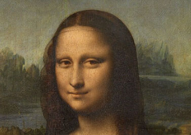
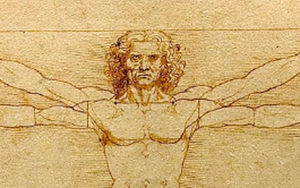
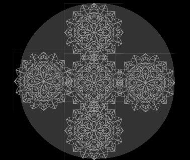
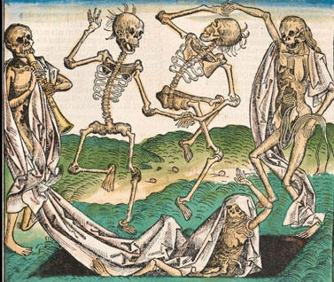
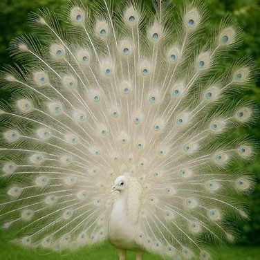

Man Ray Le Violon d’Ingres
1924
Le Violon d’Ingres est une photographie emblématique du surréalisme, réalisée par Man Ray en 1924
Les Larmes de verre (Glass Tears) est une œuvre photographique réalisée par Man Ray en 1930...
Le Violon d’Ingres est une photographie emblématique du surréalisme, réalisée par Man Ray en 1924

The Mona Lisa is a portrait painting by Leonardo da Vinci, believed to have been started around 1503

l Uomo Vitruviano è un disegno realizzato da Leonardo da Vinci intorno al 1490, che rappresenta le proporzioni ideali del corpo umano
仏教でいう涅槃は、「苦しみや煩悩から完全に解放された状態である

弘仁年間(９世紀初頭)に空海(弘法大師)は唐に留学し、恵果阿闍梨から灌頂とともに両界曼荼羅の最新形を授与された。

死の舞踏(Danse macabre)とは、中世末期の14世紀から15世紀のヨーロッパで流布した寓話、およびそれをもとにした一連の絵画や彫刻の様式である。
光の粒は色彩は金属元素の発光によって生まれ、形や広がりはその構造に依る。

白孔雀は、インドクジャクの突然変異によって白くなったインドクジャクの変種。神秘的な美しさから幸運の象徴とされ、神の使いや縁起の良い生き物として古代から日本で信じられている。